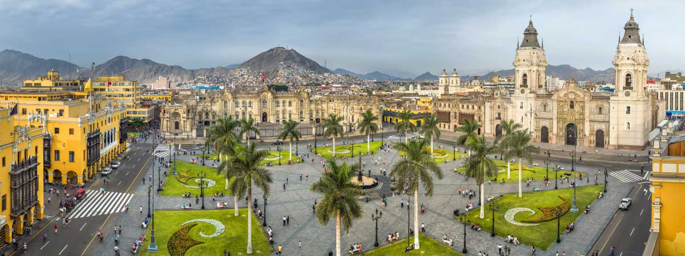

LIMA (PERÚ)
Lima respeta su pasado y logra la armonía perfecta entre la tradición y la arquitectura contemporánea. Recorrer sus calles es admirar sus iglesias, sitios arqueológicos y casonas con balcones que conviven con modernos edificios. En 1991, su Centro Histórico fue declarado Patrimonio Cultural de la Humanidad: sus monumentos artísticos debían ser protegidos.
Lima también es la única capital sudamericana con salida al mar. Sus playas son perfectas para los surfistas y en sus malecones, la suave brisa refresca paseos en bicicleta y caminatas. También se puede volar en parapente sobre el Océano Pacífico.
En esta ciudad con linaje, fundada en 1535, la abundancia de productos naturales, la fusión de técnicas y culturas, forjaron en siglos una gastronomía con identidad mestiza. Por la excelente calidad y pasión de los cocineros peruanos, Lima ha sido nombrada Capital Gastronómica de Latinoamérica.
Lima, un amor a primera vista para los que desean vivir una experiencia única.